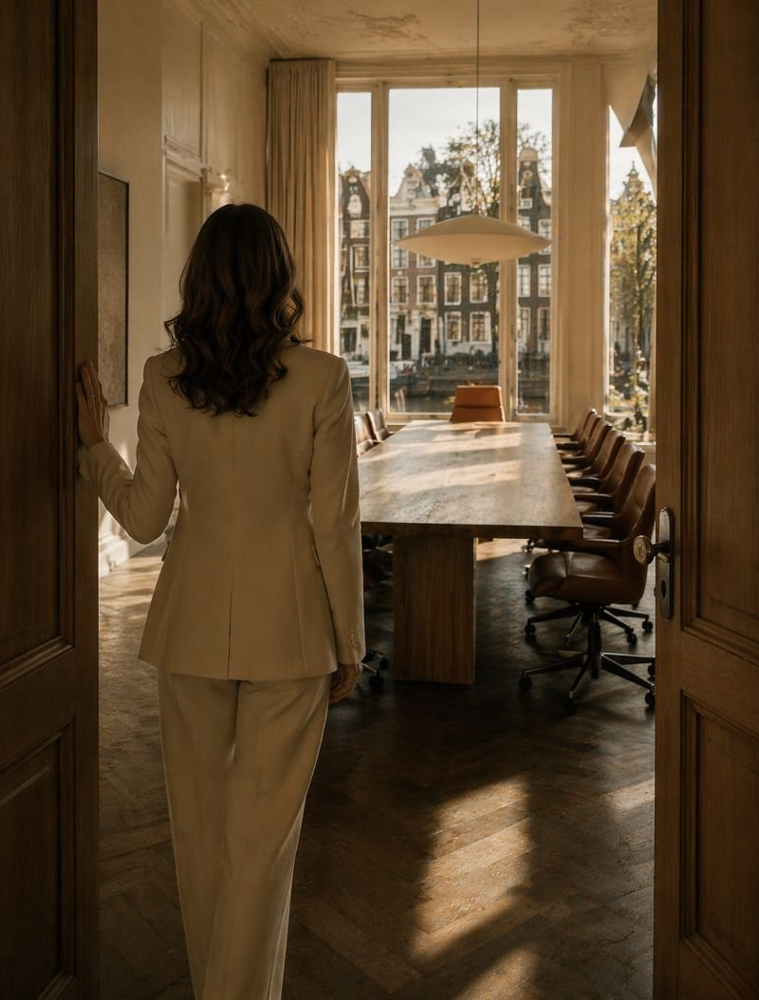

Where the role outgrows the self-image

A senior executive told me recently that they could challenge anyone in the business, except the chair. They said it quietly, almost in passing.
That single sentence carried more strategic information than the entire performance review on their desk.
Arnold Mindell, the founder of process-oriented psychology, called this kind of moment the edge. The boundary between what a person already knows about themselves, and what they have not yet allowed themselves to become.
An edge is less about competence, and more about the quiet permission a leader gives themselves to be seen differently.
In coaching rooms, edges look ordinary.
The general counsel who can argue any case in the building except her own. The chief of staff who can draft any brief except the one asking, on her own behalf, for more. The leader who can hold ambiguity for the team, but not for herself.
None of this surfaces in a performance review, yet it shapes everything. The edge sits in the place where the role has outgrown the self-image.
You can locate an edge without asking a single question. It shows up in the half sentence, in the small laugh before a bolder view, in the quiet shift to a safer topic just as something important was about to be said.
These are the micro-signals of the growth frontier.
The paradox of senior leadership sits here: the higher the role, the more the person is asked to meet themselves. Systems and stakeholders can be managed through skill. Identity expands more slowly, edge by edge, as the leader becomes willing to be seen as someone they were not, the last time anyone looked.
Organisations move when the people at the top stop optimising and begin expanding who they are willing to be inside the role.
The deeper psychology of senior leadership lives here: a steady, often uncomfortable practice of meeting the self the position is now asking for.